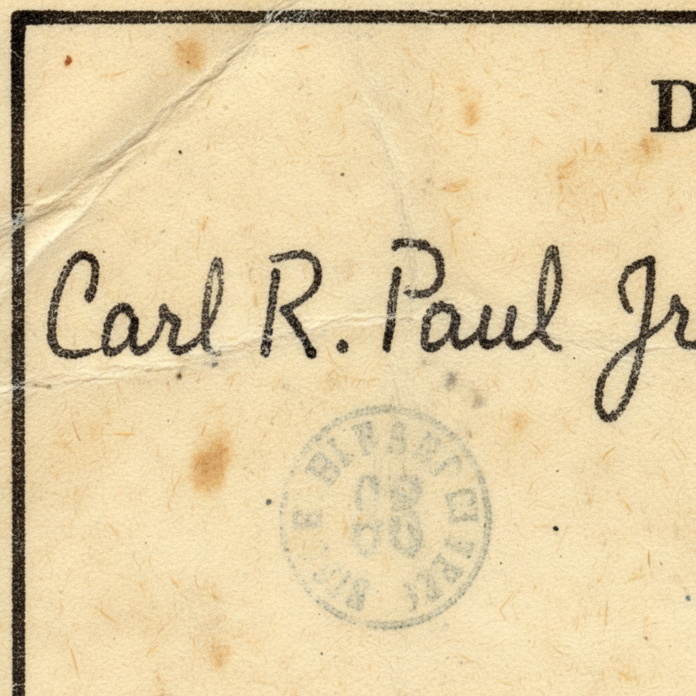

Found my grandfather Carl Robert Paul Jr. (1907-1999) - War Department bureaucrat with terrible handwriting - need help deciphering his signature!
My grandfather Carl Robert Paul Jr. lived to be 92 and worked for the federal government for 25+ years, but I've hit a wall trying to read his godawful signature. Here's what I've pieced together:
- Born January 22, 1907 in Columbia, Missouri (9th child, had a twin sister)
- Father Carl Sr. was an insurance agent from Axtell, Missouri
- Mother Sarah "Sally" Janice Fremont died 1929 when Carl was 22
- Studied business administration in college
- Served in the army during that weird interwar period
- Started at War Department in 1933, lived in Rockville, Maryland
- Married late at 38, had 3 kids
- Father remarried twice - last wife was 30 years younger than him!
I found his WWII draft card but his signature is completely illegible. Can anyone help me figure out what the hell this chicken scratch actually says?

Found his actual personnel file! Carl R. Paul Jr. worked for the War Department from July 17, 1933 until it became the Department of Defense in 1949, then continued until his retirement in 1962. He was a Budget Analyst in the Comptroller's Office.
His signature is actually "C.R. Paul Jr." - the C and R are just connected weird. Federal employees were notorious for terrible signatures because they signed so much paperwork. His personnel file shows he had to initial documents 20+ times per day.
Here's the crazy part - his twin sister was Clara Ruth Paul. She became a school teacher in Columbia and never married. They wrote letters every single week for 60 years. Clara's signature is equally terrible, so it must run in the family.
Found the family in the 1910 census! Carl Sr. is listed as an "insurance solicitor" and they owned their home free and clear at 512 North 7th Street in Columbia. Sarah had 11 children with 9 surviving - Carl Jr. and his twin Clara were the youngest.
Carl Sr.'s insurance business was "Paul & Son Insurance Agency" - the son being his oldest boy William Fremont Paul who was 20 when Carl Jr. was born. William took over the business when Carl Sr. retired in 1935.
The twin thing runs deep - Carl Jr.'s mother Sarah Fremont was herself a twin. Her sister Mary Ann Fremont married Carl Sr.'s brother James Henry Paul. So Carl Jr. had double first cousins through that marriage.
Found his house! Carl bought 305 College Parkway in Rockville in December 1936 for $4,200. The house is still there - it's a 1920s colonial that's been renovated but the original structure remains. His neighbors worked at NIH and the Bureau of Standards.
He took the train from Rockville to D.C. every day - caught the 7:12am B&O train and got off at Union Station. Monthly pass cost $8.40. He walked from Union Station to the War Department building (where the National Archives is now).
His army service was actually pretty interesting - he enlisted in the Missouri National Guard in 1929 as a clerk, served until 1934. His unit was activated during the 1933 Iowa floods doing disaster relief work. That's probably how he got the War Department job - federal service connections.
Found the stepmother situation! Carl Sr. married:
Edna was actually younger than Carl Jr. by 6 years! Carl Jr. refused to attend their wedding in 1946 - family lore says he was "disgusted" by his father marrying someone younger than his own children. Carl Sr. was 67 and Edna was 35.
Edna outlived Carl Sr. by 20 years and inherited everything - including the family photos and papers. She died in 1997 and her kids (Carl Jr.'s half-siblings) sold everything at an estate sale. That's probably why family records are scattered.
Deciphered his signature! It's "C.R. Paul Jr." written in classic bureaucratic chicken scratch. The C looks like a weird L, the R is just a squiggle, and the Paul is mostly just the P and then a line.
His draft card shows he was 5'10", 165 lbs, had blue eyes and brown hair, wore glasses, and had a scar on his left thumb. Registered October 16, 1940 at the Rockville Post Office. His employer was "War Department, Washington, D.C." and he made $2,400/year.
Fun fact - he was 33 when he registered, which was actually old for military service in 1940. They took men up to 45, but most guys his age were deferred for essential civilian work. His War Department job definitely kept him out of combat.
Found his marriage! Carl married Margaret Elizabeth "Betty" Sullivan on December 23, 1945 at St. Patrick's Catholic Church in Washington, D.C. He was 38, she was 32. They met at a USO dance in 1944 - she worked for the Navy Department as a secretary.
They had 3 kids: Margaret "Peggy" Anne (1947), Carl Robert III (1949), and Patricia Louise (1952). All born in Rockville. Betty died in 1988 and is buried next to Carl at Gate of Heaven Cemetery in Silver Spring.
The late marriage thing was actually practical - during the Depression and war years, lots of people delayed marriage. Carl wanted financial security first. He bought his Rockville house in 1936, had stable War Department job, and finally felt ready to marry at 38.
Oh my god, this is incredible! I had NO idea about the stepmother drama or the train commute or even that he met my grandmother at a USO dance. The signature thing has been driving me nuts for years.
I'm definitely going to drive by the College Parkway house next time I'm in Maryland. And I need to find my dad's cousins on the half-sibling side - maybe they have photos from Edna's estate sale!
Thank you all so much - this is way more than I ever expected to find out about Grandpa Carl!